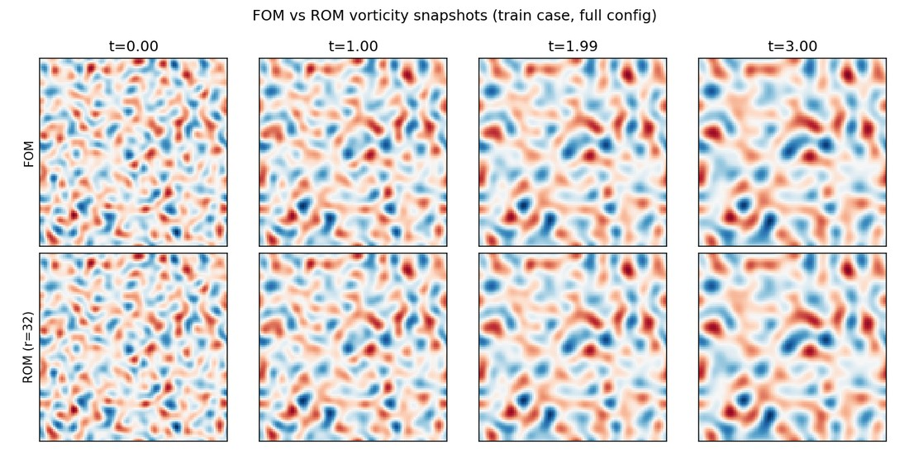

CFD · Reduced-order modelling
My contribution
I implemented and verified a Fourier pseudo-spectral solver, then developed POD-Galerkin and DEIM reduced models.
Research implementation
38.5× online speed-up at <0.1% mean state error on the training trajectory (rank 16).
Problem
Solving the 2D incompressible Navier–Stokes equations on a doubly periodic domain to research-grade accuracy, then building a fast, independently verified reduced-order surrogate for repeated evaluation.
Approach
Vorticity-streamfunction formulation; Fourier pseudo-spectral spatial discretisation with 2/3-rule dealiasing; FFT-based Poisson solve; integrating-factor RK4 time integration. The reduced model is a discrete-L² POD-Galerkin projection with precomputed linear and quadratic operators, plus a DEIM hyper-reduction variant.
Verification
Validated against the Taylor-Green vortex exact solution and an independent manufactured solution, confirming fourth-order temporal and spectral spatial convergence; incompressibility held to machine precision; reduced operators verified against the projected full-order right-hand side.
Key finding
At rank 16, the tensor ROM reaches under 0.1% mean state error at 38.5× online speed-up on its training trajectory. A snapshot basis built from four training realisations reconstructs its own training data almost perfectly, but an unseen flow realisation at the same physical parameters is captured almost not at all (≈99% error at every tested rank). This demonstrates limited generalisation of the tested snapshot basis.
{kind=link}
